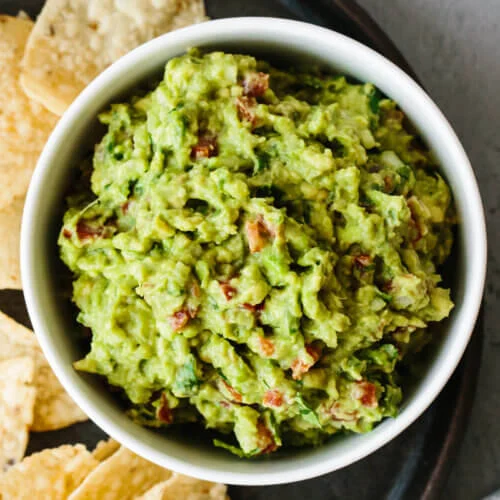

Guacamole Recipe

Description
Guacamole is an avocado-based dip or spread that originated in Mexico. It's typically made with mashed avocado and lime juice, then seasoned with salt and cilantro. Guacamole often contains tomatoes and onions.
In this recipe you will get restaurant-worthy guacamole in just a few ingredients. You'll be surprised how easy it is to make this top-rated guacamole recipe. You'll come back to it again and again!
Ingredients list
- 3 Avocados
- 1 Lime
- 1 tes spoon of Salt
- 2 roma tomatoes
- 3 tablespoons chopped cilantro
- 1 teaspoong minced garlic
- 1 pinch ground cayenne pepper
Steps to make
- Mash avocados, lime juice, and sal together in a medium bowl; mix in tomatoes, onion, cilantro, and garlic. Sir in cayenne pepper.
- Serve immediately, or cover and refrigerate for 1 hour for improved flavor